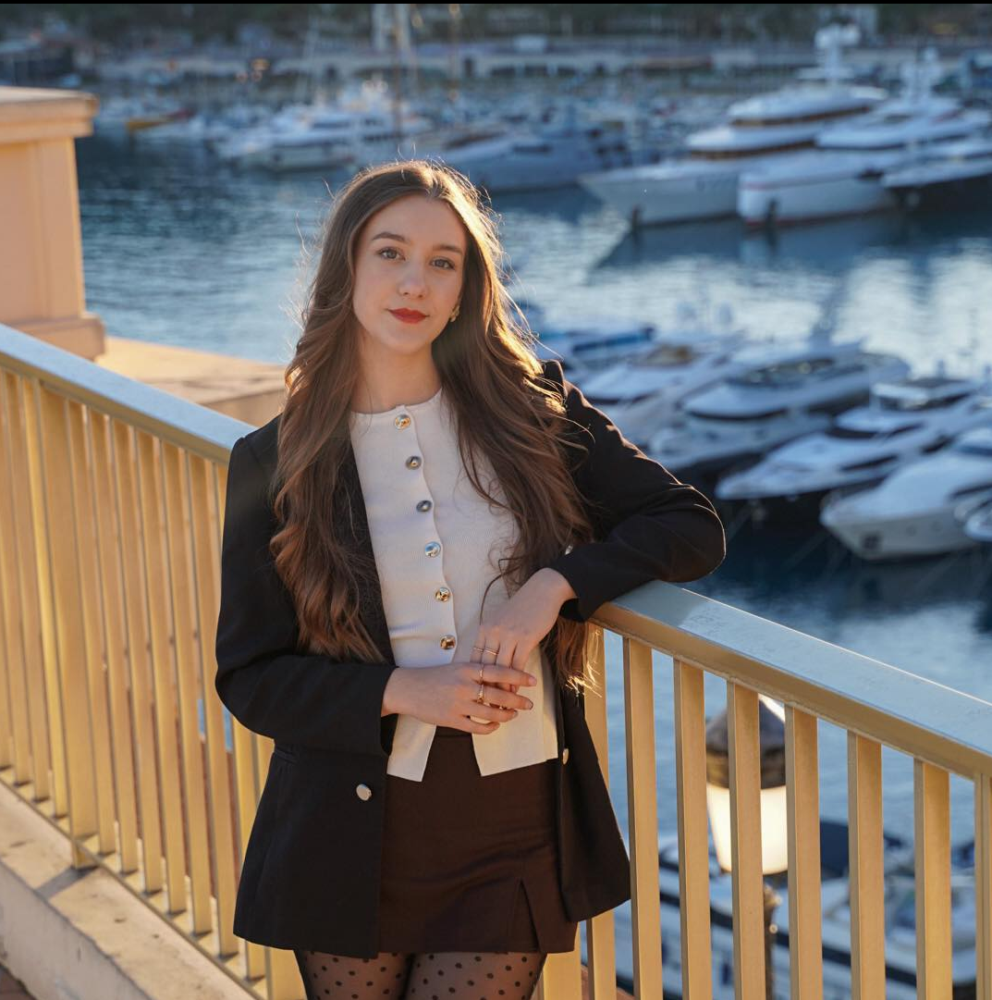

Loading gallery...
Profi esküvői és rendezvény fotós

Opauszki Kamilla,
A fotózás művészete már gyerekkorom óta szenvedélyem. Hiszek abban, hogy a legjobb fotók nem beállítottak, hanem spontán pillantok, valós érzelmek egy képbe zárva.
A képkészítés szakmájában már nagyon sok különböző területen helyt álltam. Dolgoztam már sport eseményeken, kisebb esküvőkön, családi rendezvényeken, workshop-okon, magánszemélyekkel így
közel áll hozzám a kismama, baba vagy páros fotózás is.
Loading gallery...